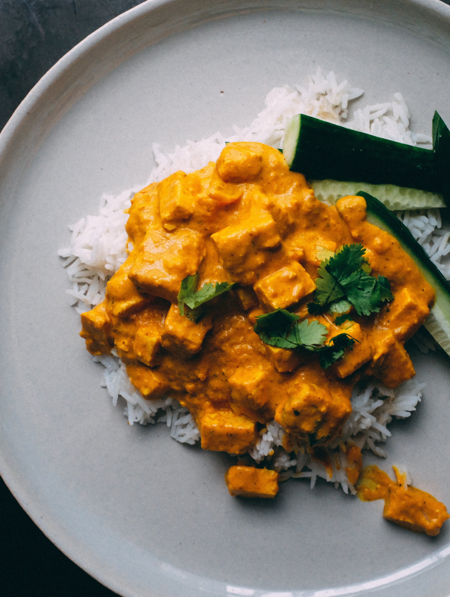

Return home
Men's Spicy Curry

This spicy curry is a favorite recipe for
Alethi lighteyed men. In Alethkar, men and women eat different
cuisines, with men's food often being spicier and women's food often
being sweeter.
Ingredients
- 5 large tomatoes
- 1/2 red onion
- 3 cloves garlic, finely chopped
- 1 bay leaf
- Cumin
- Sweet potatoes
- 1/2 pound chull meat
- 1/4 pound cremlings
- 2 cups rice
Steps
- Sauté the onion and garlic with cumin and other
available spices. Start cooking the rice in the meantime.
- Add tomatoes when fragrant.
- Add sweet potatoes and cook until they become soft.
- Add the chull and cremlings, remove from heat when cooked through.
- Divide and serve with rice on a plate.